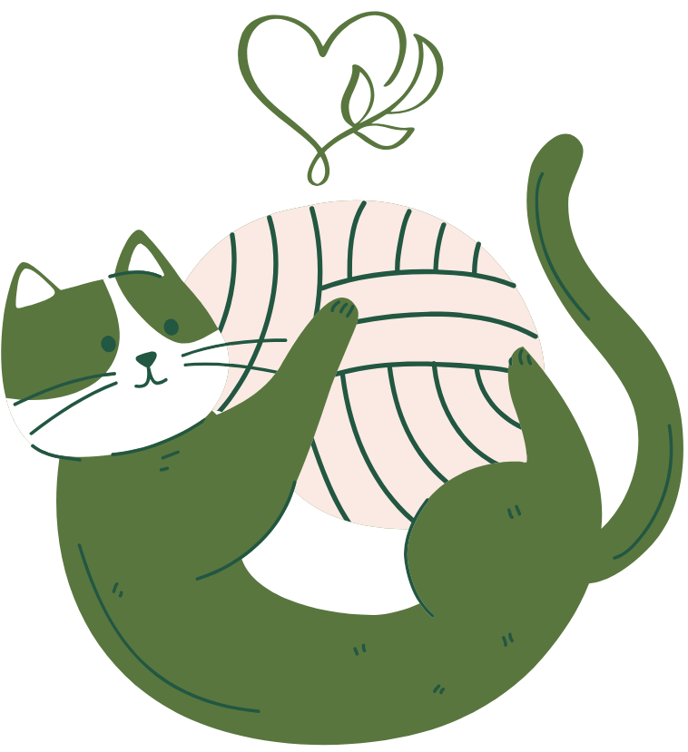

100% VEGAN & CRUELTY FREE
THE HEART
OF OUR CRAFT
At The Lilypad, our dedication to using vegan yarns goes
beyond a choice; it's a pledge woven into every creation we
craft. Why vegan yarns, you ask? Because for us, it's more
than just a material – it's a conscious decision that aligns
with our values of compassion and sustainability.
We embarked on a quest to redefine craftsmanship
by embracing ethical and cruelty-free practices. Our vegan
yarns are sourced from the purest origins, meticulously
chosen to uphold the highest standards of sustainability and
eco-friendliness. Each strand tells a tale of mindful
selection, where natural and plant-based fibers create
yarns without compromising on quality or aesthetics.

We take pride in our commitment to crafting without
harming animals or the environment. By opting for vegan
yarns, we ensure that every loop and stitch reflects
our ethos of kindness and responsibility. Our creations are not
just beautiful; they carry a deeper narrative of conscious creation,
where artistry intertwines seamlessly with ethical choices.
Join us on this journey as we unravel the story behind our
vegan yarns. Step into a world where creativity meets
compassion, and where every handmade creation is a
testament to our belief in a sustainable, cruelty-free future.
At The Lilypad, our dedication to vegan yarns isn't just a statement –
it's a heartfelt narrative woven with threads of purpose and hope.
THE ARTISANS
 |
 |
 |
 |
 |
 |